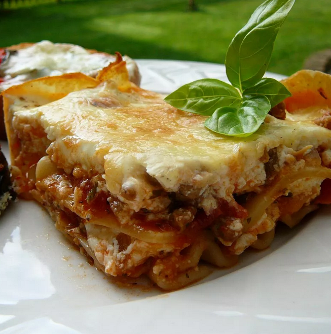

Lasagna

Total Time:
1 hrs 50 mins
Ingredients
- 1 (8 ounce) package lasagna noodles
- ½ pound ground pork sausage
- ½ pound ground beef
- 1 clove garlic, minced
- 1 (28 ounce) can diced tomatoes
- 1 (8 ounce) can tomato sauce
- 1 tablespoon dried parsley
- ½ teaspoon dried basil
- ½ teaspoon dried oregano
- 1 pinch white sugar
- (16 ounce) container sour cream
- 3 eggs, lightly beaten
- ¾ cup grated Parmesan cheese
- ½ cup chopped pitted green olives
- 2 teaspoons salt
- ¼ teaspoon ground black pepper
- 2 (12 ounce) packages shredded mozzarella cheese, divided
Directions
- Preheat oven to 375 degrees F (190 degrees C).
- Fill a large pot with lightly salted water and bring to a rolling boil over high heat. Stir in the lasagna noodles, and return to a boil. Cook, uncovered, stirring occasionally, until the pasta has cooked through, but is still firm to the bite, about 8 minutes. Drain.
- Heat a large skillet over medium-high heat and cook and stir the sausage, ground beef, and garlic until the meat is crumbly, evenly browned, and no longer pink. Drain any excess grease. Stir in the diced tomatoes, tomato sauce, parsley, basil, oregano, and sugar. Bring to a boil over high heat, then reduce the heat to medium-low, and simmer, stirring occasionally, until the sauce is thickened, about 30 minutes.
- Stir together the sour cream, eggs, Parmesan cheese, green olives, salt, black pepper, and 1/2 of the mozzarella cheese in a bowl.
- To assemble the lasagna, spread a thin layer of the meat sauce evenly over the bottom of a 9x13 inch baking pan. Cover with 1/3 of the lasagna noodles, 1/3 of the remaining meat sauce, 1/3 of the sour cream mixture. Repeat this layering 2 more times. Sprinkle the remaining mozzarella cheese evenly over the lasagna.
- Bake in the preheated oven until the sauce is bubbly and the top is golden brown, about 30 minutes.
Go Back